01 LEWORD
쓸 키워드를 먼저 고릅니다
검색량, 문서수, 경쟁 흐름을 보고 감이 아니라 기준으로 글감을 잡습니다.
Leadernam Orbit renewal
글 작성, 이미지 생성, CTA, 거미줄 연결, 외부유입 글까지 이어지는 올인원 SEO 발행 엔진
Leaders Orbit은 키워드 하나에서 본문과 썸네일, 표, FAQ, CTA, 내부 연결 구조까지 만들고 Blogger API, WordPress REST, Tistory 브라우저 발행 흐름에 맞춰 실제 공개 글까지 이어주는 운영형 자동화입니다.
검색량, 문서수, 경쟁 흐름을 보고 감이 아니라 기준으로 글감을 잡습니다.
작성 화면에서 본문과 썸네일, 표, FAQ, 내부 연결까지 이어집니다.
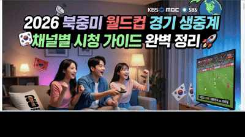
월드컵처럼 수요가 몰리는 주제도 썸네일과 글 구조가 함께 정리됩니다.
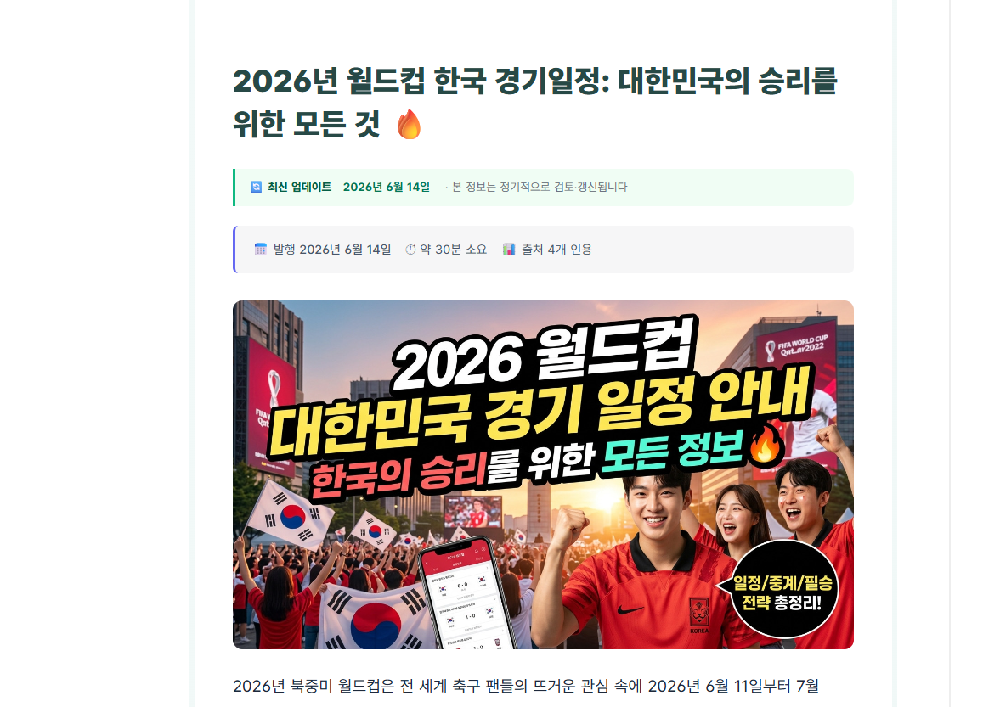
블로그스팟, 워드프레스, 티스토리까지 실제 발행 결과로 설득합니다.
현재 이벤트 안내
지금은 초기 도입 고객을 위한 이벤트 기간입니다. 영구제 현재 조건은 유지하되, 8월 1일부터는 올인원 패키지가 1개월, 3개월, 1년, 영구제 신규 가격표로 전환됩니다.
2026년 8월 1일부터 적용
2026년 8월 1일부터 적용
2026년 8월 1일부터 적용
영구제는 8월 1일부터 해당가 적용
검색 노출, 수익, 애드센스 승인, 특정 순위 달성은 보장하지 않습니다. 플랫폼 API 키, 계정 연동, 보안 인증, 운영 기간과 콘텐츠 품질에 따라 결과가 달라질 수 있습니다.
Why Orbit
초보자는 API 설정에서 막히고, 운영자는 이미지와 CTA가 반복되어 지치고, 여러 플랫폼을 쓰는 사용자는 계정과 카테고리, 발행 예약을 따로 관리하다 흐름이 끊깁니다. Orbit은 이 반복 작업을 하나의 화면과 대기열 안으로 묶는 것을 목표로 설계되었습니다.
Blogger OAuth, WordPress App Password, Tistory 세션 흐름을 각각의 방식에 맞게 안내합니다.
제목, 본문, 표, FAQ, CTA가 한 글 안에서 자연스럽게 이어지도록 구성합니다.
썸네일과 본문 이미지를 엔진별로 생성하고 글별 미리보기 흐름을 제공합니다.
연속발행과 다중계정 발행에서 계정, 간격, 이미지, 상세설정을 함께 관리합니다.
3-platform engine
블로그스팟과 워드프레스는 API 기반으로 안정적인 송출을 목표로 하고, 티스토리는 공식 발행 API 제약 때문에 브라우저 세션 기반으로 HTML 편집기, 카테고리, 썸네일, 예약 발행 흐름을 맞춥니다.
블로그스팟은 OAuth 토큰과 Blog ID를 기준으로 API 발행, 예약, 글 목록 확인 흐름을 구성합니다.
워드프레스는 사이트 URL, 관리자 ID, 앱 비밀번호를 이용해 이미지 업로드와 글 발행을 처리합니다.
티스토리는 로그인 세션을 유지한 뒤 카테고리 선택, HTML 입력, 썸네일 지정, 즉시/예약 발행을 자동화합니다.
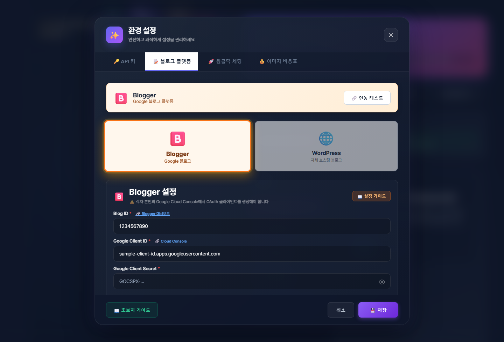
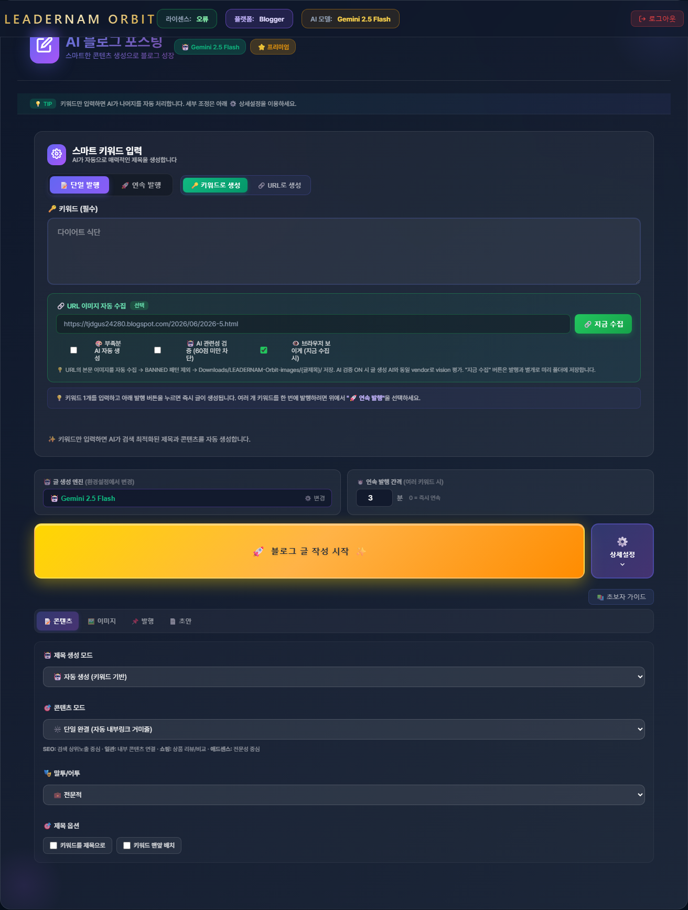
Operating flow
사용자는 키워드를 넣고 필요한 상세설정을 선택합니다. Orbit은 글 구조, 이미지, CTA, 발행 대상, 예약 간격을 작업 흐름에 맞춰 정리합니다.
주제, URL, 기존 글을 기준으로 글 생성 대상을 정합니다.
제목, H2, 표, FAQ, CTA를 글 목적에 맞게 구성합니다.
썸네일, 본문 이미지, 엔진별 이미지 대기열을 관리합니다.
Blogger, WordPress, Tistory 중 선택한 플랫폼으로 발행합니다.
개별 글과 종합글을 CTA와 내부 연결 흐름으로 엮습니다.
발행 글을 기반으로 인스타그램, 네이버, Threads용 보조 문안을 만듭니다.
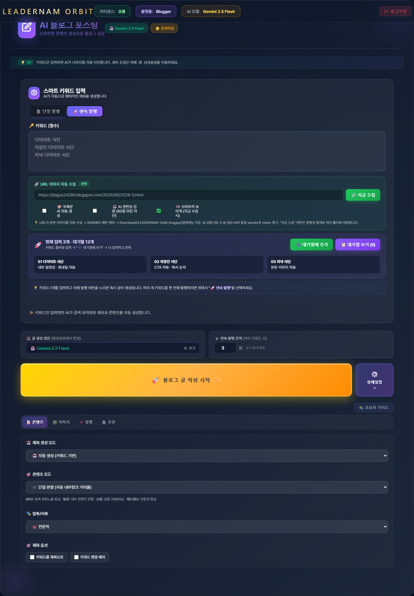
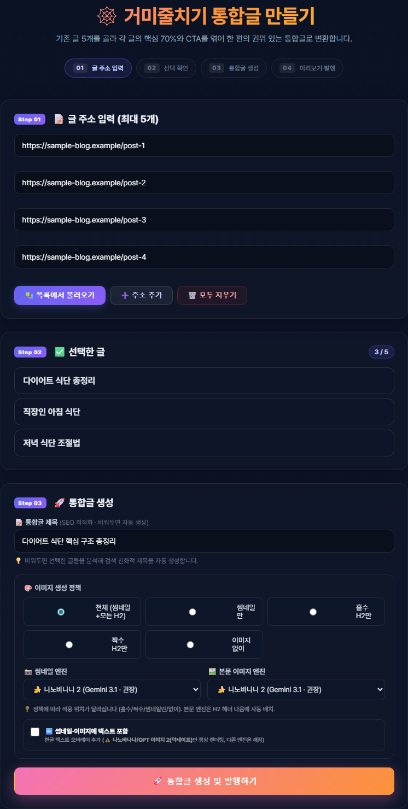
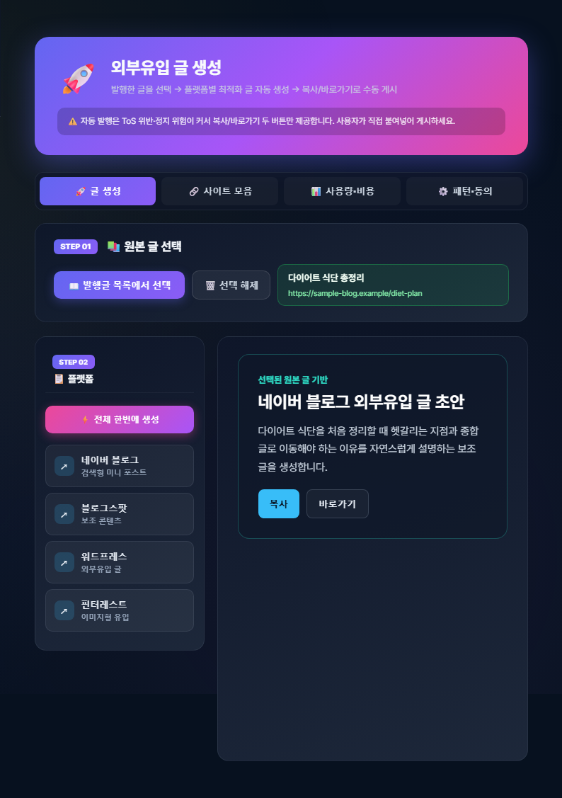
Tistory added
티스토리는 단순 API 송출 방식이 아니라 브라우저 기반 글쓰기 흐름을 따라갑니다. 세션이 살아 있으면 바로 글쓰기 화면으로 이동하고, 카테고리와 HTML 모드, 썸네일 지정, 즉시/예약 발행을 순서대로 처리하는 구조로 확장했습니다.
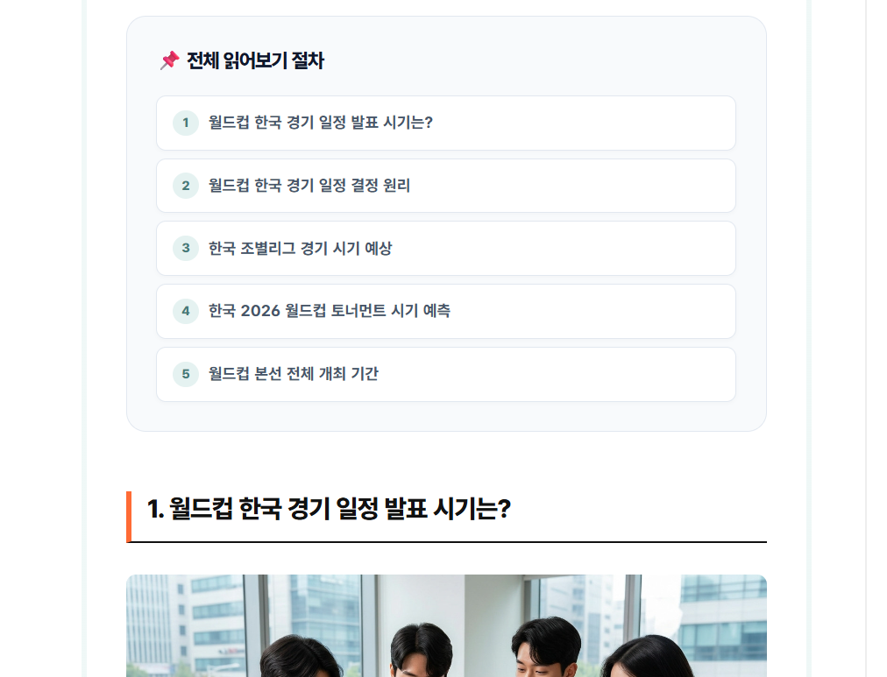
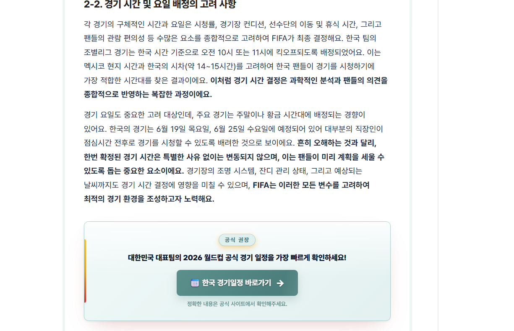
최초 로그인, 2단계 인증, CAPTCHA처럼 플랫폼 보안정책상 사용자가 직접 완료해야 하는 구간은 앱이 우회하지 않습니다. 대신 상태를 감지하고 사용자가 완료한 뒤 다음 단계로 이어질 수 있게 안내하는 방향으로 설계합니다.
Output quality
글이 길어질수록 중요한 것은 “많이 쓰는 것”보다 독자가 스크롤하면서 이해할 수 있는 구조입니다. Orbit은 목차, 핵심 요약, 표, 이미지, CTA, FAQ가 서로 겹치지 않고 읽히도록 출력 템플릿을 맞춰갑니다.
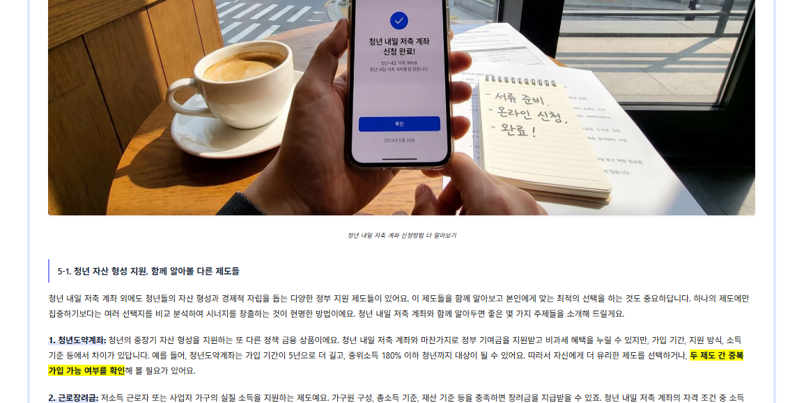

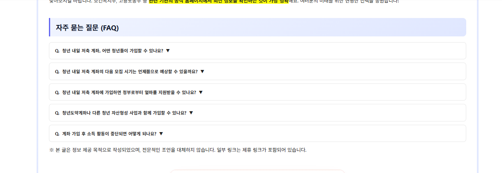
All-in-one package
키워드 발굴은 LEWORD, 네이버 채널 운영은 Better Life Naver, 글로벌 보조 채널 발행은 Leaders Orbit으로 나눠서 쓰되, 사용자는 올인원 패키지 안에서 함께 사용할 수 있습니다.
실시간 검색어, 황금키워드, 트래픽 키워드 후보를 찾습니다.
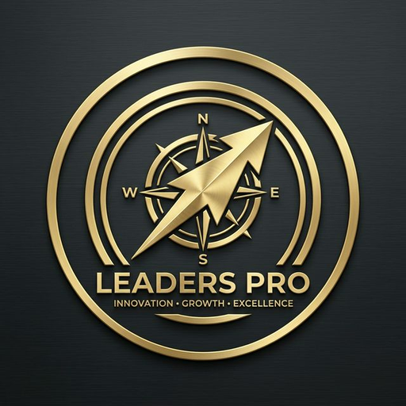
Better Life Naver네이버 글쓰기와 이미지, 스케줄, 반복 운영을 자동화합니다.
블로그스팟, 워드프레스, 티스토리 발행과 외부유입 구조를 연결합니다.
Who needs this
Event closes soon
Leaders Orbit은 이제 블로그스팟과 워드프레스뿐 아니라 티스토리까지 포함합니다. 키워드 발굴, 네이버 자동화, 글로벌 블로그 발행, 외부유입 글 생성까지 하나의 운영 흐름으로 정리하고 싶다면 현재 이벤트 가격을 기준으로 검토해보세요.
이벤트 가격 다시 보기본 페이지의 이미지와 설명은 실제 제품 화면을 기반으로 구성했습니다. 기능 범위는 업데이트에 따라 더 좋아질 수 있으며, 플랫폼 정책상 제한되는 보안 인증은 사용자가 직접 진행해야 합니다.